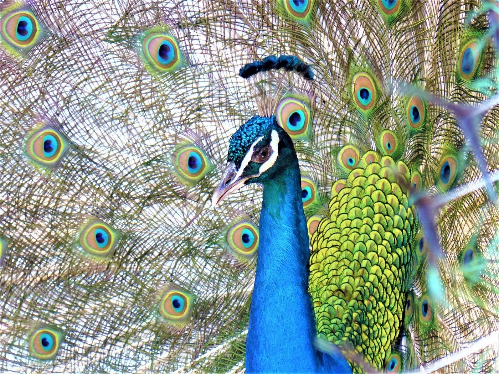

Piknik
Er zijn bankjes. Neem water mee. Het kasteel en de molen van Antimachia liggen in dezelfde streek.

Gratis bos bij Antimachia. Pauwen lopen er rond. Bij een beekje zie je soms schildpadden, en katten in de schaduw. Er is een korte verharde weg vanaf de hoofdweg.
Er zijn bankjes. Neem water mee. Het kasteel en de molen van Antimachia liggen in dezelfde streek.